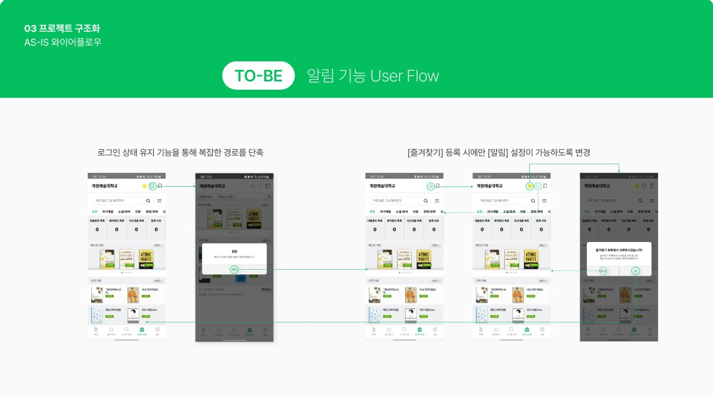

← 전체 프로젝트
교보문고 전자도서관
전자도서관 앱 UX/UI 개편
교보문고 전자도서관을 ‘디지털 독서 공간’으로 리뉴얼하기 위한 UX/UI 개선 프로젝트입니다.

Why무료라 남는 앱, 평점 2.9
Decide탐색·독서 흐름 재설계
Validate화면설계서로 동작 규칙 정의
01Why · 문제의 원인
사람들은 무료라서 남아 있을 뿐,
사람들은 무료라서 남아 있을 뿐,
앱 평점은 2.9에 머물러 있었습니다.
환경분석과 벤치마킹으로 현재 앱을 살펴보니, 이용자가 머무는 이유는 경험의 만족이 아니라 ‘무료’라는 조건이었습니다. 책을 찾고 읽기까지의 경로가 복잡해 독서 공간으로서의 역할을 하지 못하고 있었습니다.
📝 채워 주세요 — 리뷰 분석 수치, 벤치마킹 대상과 비교 포인트
환경분석 · 리뷰 분석
벤치마킹
02Decide · 방향
탐색과 독서 흐름을
탐색과 독서 흐름을
처음부터 다시 설계했습니다.
AS-IS 와이어플로우를 분석해 불필요하게 길어지는 경로를 찾고, TO-BE 흐름을 정의했습니다.
- 로그인 상태 유지 기능으로 복잡한 진입 경로를 단축
- [즐겨찾기] 등록 시에만 [알림]을 설정할 수 있도록 알림 흐름을 변경
AS-IS → TO-BE 와이어플로우
03Validate · 검증
누가 봐도 질문이 나오지 않도록,
누가 봐도 질문이 나오지 않도록,
화면설계서로 동작 규칙을 정의했습니다.
화면 설계 단계에서 세세하고 정확한 기준을 적는 데 가장 공을 들였습니다. 특히 BACK OFFICE는 일반 사용자가 아닌 관리자가 정보를 제공받는 화면에 초점을 두고 설계했습니다.
- 기획서문제 정의 · 개선 방향
- 기능정의서기능 단위 동작 규칙
- IA · 사이트맵정보 구조
- APP 화면설계서사용자 화면
- BACK OFFICE 화면설계서관리자 화면
- PT최종 발표
📝 확인해 주세요 — 산출물 6종 구성이 맞는지, 화면설계서 대표 페이지 이미지
APP 화면설계서
BACK OFFICE 화면설계서
04Retrospect · 회고
사용자뿐 아니라 운영하는 사람의 화면까지
관리자 관점의 BACK OFFICE를 설계하며, 서비스는 사용자 화면만으로 완성되지 않는다는 것을 배웠습니다. 회의 진행과 의견 조율, 일정 수립·관리를 맡으며 2인 기획 팀의 문서 흐름을 끝까지 책임졌습니다.
NEXT PROJECT